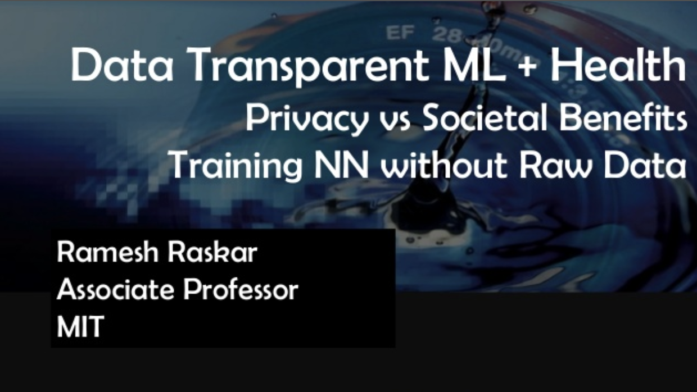

Split Learning and Inference
Split learning removes barriers for collaboration in a whole range of sectors including healthcare, finance, security, logistics, governance, operations and manufacturing.

For example, a split learning configuration as shown below allows for resource-constrained local hospitals with smaller individual datasets to collaborate and build a machine learning model that offers superior healthcare diagnostics, without sharing any raw data across each other as necessitated by trust, regulation and privacy.
Landscape of related work: As shown below, split learning ideally fills the gap for being able to perform advanced AI tasks like training machine learning models in distributed settings with a substantial level of data protection.
SplitNN Architectures, Leakage Prevention and Diverse Applications